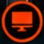
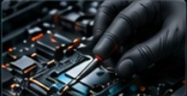
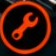
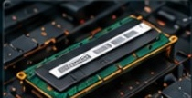
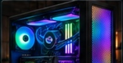
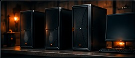
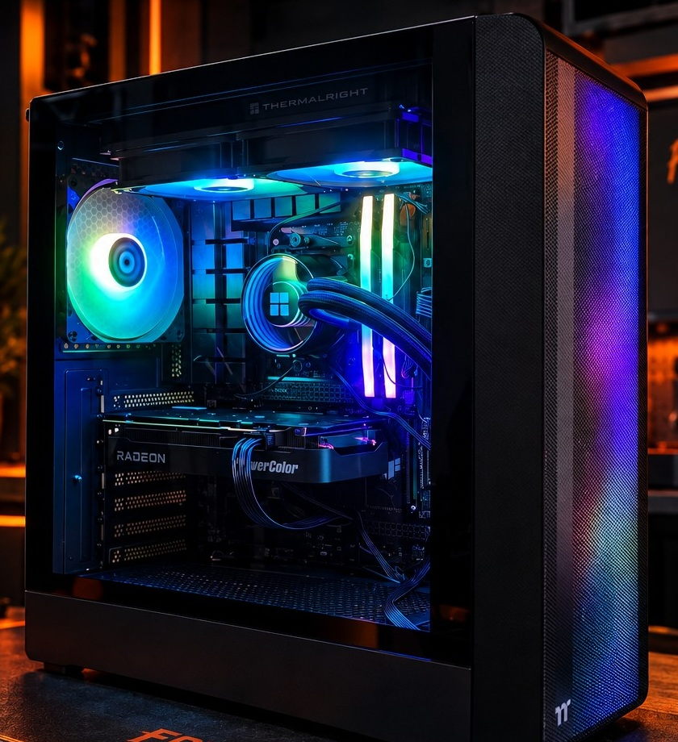

PC REMIS À NEUFDes ordinateurs sélectionnés, nettoyés, testés et prêts à utiliser.
VOIR L'INVENTAIRE → Accueil
Services
Inventaire
À propos
Contact
Accueil
Services
Inventaire
À propos
Contact
Réparer. Améliorer. Optimiser.
Ici, en Mauricie.
Des solutions adaptées à vos besoins

PC REMIS À NEUFDes ordinateurs sélectionnés, nettoyés, testés et prêts à utiliser.
VOIR L'INVENTAIRE →

RÉPARATIONSDiagnostic, réparation et solutions durables pour vos appareils.
DEMANDER UN DIAGNOSTIC →

Des configurations adaptées à vos besoins et à votre budget.
DISCUTER DE VOTRE PROJET →Simple, transparent et sans surprises.
Un problème informatique ?
On commence par chercher la cause.
Avant de vous conseiller une réparation ou un remplacement, nous évaluons la situation afin de déterminer ce qui vaut réellement la peine d'être fait.
DEMANDER UN DIAGNOSTIC →Shawinigan et toute la Mauricie
Nous offrons nos services à Shawinigan et dans les environs, incluant Trois-Rivières et les municipalités de la Mauricie.
EN SAVOIR PLUS →Vous avez un projet ou un problème informatique ?
Réparer. Améliorer. Optimiser.
Ici, en Mauricie.

Des ordinateurs sélectionnés, nettoyés, testés et prêts à utiliser.
Voir l'inventaire →


Des configurations adaptées à vos besoins et à votre budget.
Discuter de votre projet →
Vous nous expliquez votre problème ou votre besoin.
On fait un diagnostic et on vérifie ce qui est nécessaire.
On vous explique les options et les coûts.
Un service fiable et honnête.
Un problème informatique ? On commence par chercher la cause.
Avant de vous conseiller une réparation ou un remplacement, nous évaluons la situation afin de déterminer ce qui vaut réellement la peine d'être fait.
Demander un diagnostic →Shawinigan et toute la Mauricie
Nous offrons nos services à Shawinigan et dans les environs, incluant Trois-Rivières et les municipalités de la Mauricie.
En savoir plus →Un problème informatique ? On commence par chercher la cause.
Avant de vous conseiller une réparation ou un remplacement, nous évaluons la situation afin de déterminer ce qui vaut réellement la peine d'être fait.
Demander un diagnostic →Shawinigan et toute la Mauricie
Nous offrons nos services à Shawinigan et dans les environs, incluant Trois-Rivières et les municipalités de la Mauricie.
En savoir plus →